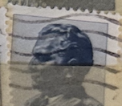
| SOURCE | TITLE| IMAGE MATCH | click to source page |
| RocketReach | Emanuele Piras Email & Phone Number | Italian Society of Cosmetic Chemists President Contact Information | 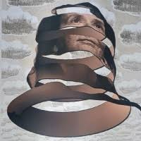 |
| MutualArt | Bruce Carter | Bruce Carter Vintage Framed Wood Prints | MutualArt | 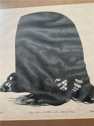 |
| Dark Scene Music | Proletarian Poetry - Feel The Fear (2025) [EP] » Dark Scene Music | |
| AG18 Gallery Vienna | Woman in Gold - AG18 Gallery Vienna | |
| Goodreads | Le jeune acteur 1 : Aventures de Vincent Lacoste au cinéma by Riad Sattouf | Goodreads | |
| Etsy | Antique Hollow Cut Silhouette of Gentleman, Black Shiny Fabric or Raised Grain Paper, Painted Gold Oval and Stars - Etsy | 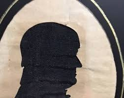 |
| 🖤 Minimalism Meets Iconic Art 🖤 When a garage door becomes a gallery. Sometimes, less really is more and this mural project is proof. 🎨 The Brief A double garage roller door | ||
| Mercedes-AMG Petronas F1... - Mercedes-AMG Petronas F1 Team | 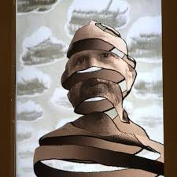 | |
| Elisabetta Stillitano (@elisabetta.stillitano.1) • Facebook, Connect with friends | 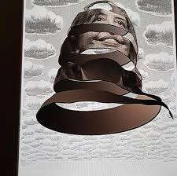 | |
| goland.group | George and Martha Washington Silhouettes Antique Framed 7” x 6” | 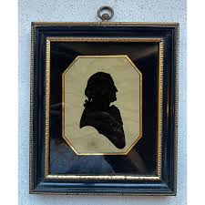 |
| Mad Van Antiques | Antique Silhouette Painting of Hobo and Smoking Pipe | Early 1900s – Mad Van Antiques | |
| The son of a serving army officer, John Edward Newell Bull was born in Athlone, Ireland on 11th October 1806. The family moved to England in 1809 where Bull was privately educated. | 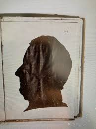 | |
| Elisa Signer (elisasigner) - Profile | Pinterest | 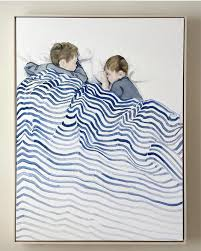 | |
| The Museum of Fine Arts, Houston | Works | Moses Williams | People | The MFAH Collections | 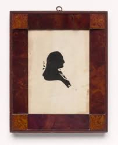 |
| MutualArt | Paolo Leonardo | 96 Artworks at Auction | MutualArt | |
| wall blush | OC Ocean Blue - Horizontal Blue Watercolor Peel and Stick Wallpaper | |
| eBay | Vintage Silhouette Pair Boy Girl Cut By Paul King Of The Cutters Framed | eBay | 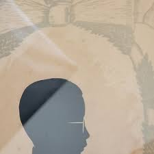 |
| eeacl.com | Murano Blk White Swirl Glass Purse Vase | |
| Michelle Starbuck Designs | Cobalt Striped Flower Earrings – Michelle Starbuck Designs | |
| Etsy | Hollies-"he Ain't Heavy, He's My Brother" Vintage Vinyl Record Album - Etsy | 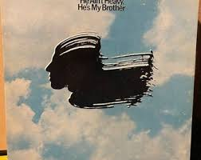 |
| mujeresporafrica.es | Hokku Designs Machine Washable Space Gray Area Rug | 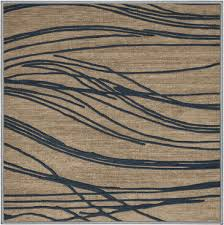 |
| Spoonflower | Where the Pine Meets the Cloud-Indigo Curtain | Spoonflower | |
| tecnomeca.com.br | Vintage Original Signed David Pelbam Rabbi Portrait in Beautiful Golden Frame | 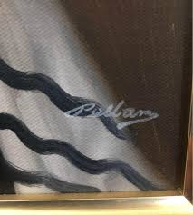 |
| via422.com | Black & White Talavera Ring 925 Sterling Silver Adjustable Artisan | 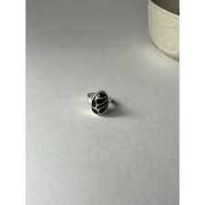 |
| Eastern Accents | Brentwood Handpainted Decorative Pillow - 20x20 | Eastern Accents | 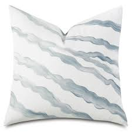 |
| MutualArt | Dieter Roth | Little Cloud (1971) | MutualArt | 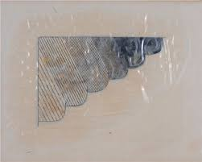 |
| Artsy | Pietro Consagra | Nero Angola (1973) | Artsy | 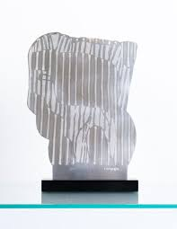 |
| Paracosm - Maggie Carmichael isn't just a single mother — she's a force of righteous fury, forged to fight the evil that took her family. They called her crazy, but she returned | 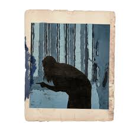 | |
| bellelectric.ca | Rare Vintage Native American Art Signed and Framed Tim Gallegy | 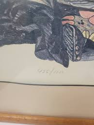 |
| دهم گرافیک مبانی هنرهای تجسمی نقطه(ترام)درهنر تجسمی هنرآموز:شب افروز | ||
| Etsy | Sequins Fabric Two Tone Lt Blue/black Geometric Design 4way Stretch Sequin Fabric Spandex Mesh BTY - Etsy | 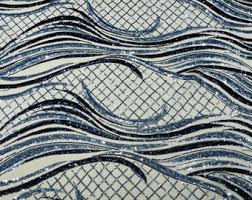 |
| Watercolor stripes by Art by Sharyl on Etsy | 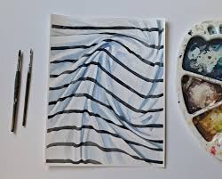 | |
| Artwork Archive | Artist: Shelly Forbes | Artwork Archive | 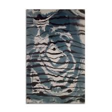 |
| Nelkarel | Hand Painted Fiorelli Wood-Grain Bag 'African Black Wood' EUC | 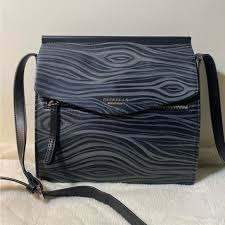 |
| mycareersunlimited.com | Antique kodak Co. 1934 Store Advertisment | 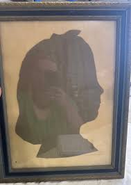 |
| Auctionet | Images for 3431904. LEIF HOLMQVIST. watercolour, “Änder”, signed Leif Holmqvist 82. - Auctionet | 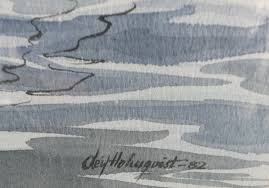 |
| Getty Images | Illustration by Jacques Onfroy de Breville, known as JOB, 1908. News Photo - Getty Images | 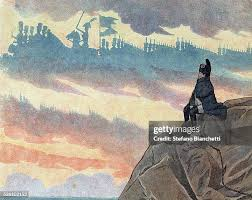 |
| Etsy | Blue and White Ikea Fabric, Hanna Dalrot Design, Vintage Ikea Fabric, Watercolor Cotton Fabric - Etsy | 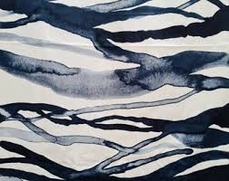 |
| thefoxlegal.com | 1.9 Yard Cowtan & Tour Sargasso Blue Abstract Cut Velvet Upholstery Fabric | 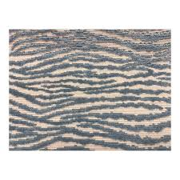 |
| Untappd | Don't Call Me Uncle - Whiplash - Untappd | |
| Etsy | Antique Silhouette Pair, Woman and Man, Woman Painted With White and Grey Highlights, Man Appears Cut-out - Etsy | 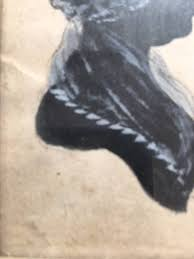 |
| Invaluable.com | Sold at Auction: [Paper cuttings]. Baron Scotford (early 20th cent.). (Silhouette of a lady). | 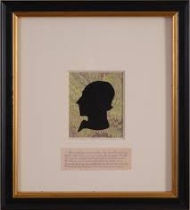 |
| They could soon go extinct ... 💔😥💔 But a Vietnamese citizen won't allow that fate to come to pass. Thai Van Nguyen educates children of the threat for pangolins. However, he needed | 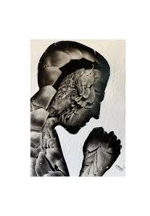 | |
| Neuland GmbH & Co. KG | Effects with templates - Neuland-Blog EN | |
| PangoBooks | The adventure of art by Felix marti-ibañez , Hardcover | Pangobooks | 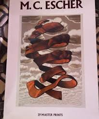 |
| escher-expo.com | M.C. Escher Exhibition Toulouse - Dive into Escher's Art | 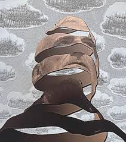 |
| Apple | dansa med dig - Apple Music | 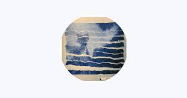 |
| Delphi Glass | Bullseye Clear, White, Black Graffiti - 90 COE | Streakies | 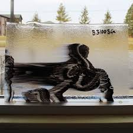 |
| Etsy | Vintage Zebra Poster by Rachel Klein From Shohar in Israel, Modernist Popart, Mid Century Silkscreen Print Wall Art 1960s - Etsy | 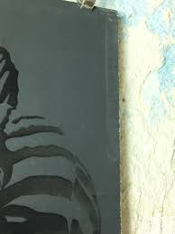 |
| adming.fi | 1940s Reverse Painted Silhouette Vintage Advertising Art Chevrolet Cat Lover | 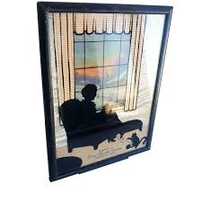 |
| Bandcamp | anomalism / repose | thought reform | 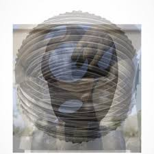 |
| Don't things feel up in the air these days? Sky Watcher Woman SoulCollage | 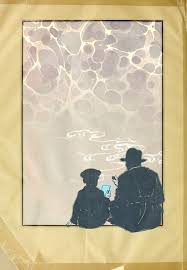 | |
| This is number 75 and so much more coming. This one is one of my all time faves. #art #contemparyart #fiberart #interiordesign | 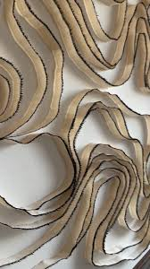 | |
| The 2026-2027 Public Art Program is on now at City Hall! Stop by any time City Hall is open. Hear about the inspiration behind Alannah Logan's "No Days Off." Farmington Hills Special | 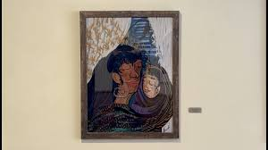 | |
| MutualArt | Salvador Dalí | 'Atmos' aus 'La suite Colibri' (1973) | MutualArt | 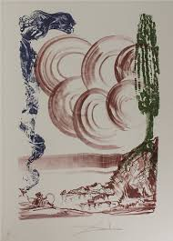 |
| Etsy | Ultramarine Blue Beach Sand Resin Earrings – Topographic Teardrop Studs - Etsy | 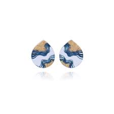 |
| Rind, 1955 M.C. Escher | 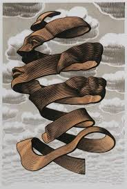 | |
| Etsy | Rock Formations Chart • Vintage Geology Poster • 5 Sizes! • Antique Geological Diagram • Sedimentary Rock Formations Art - Etsy Singapore | 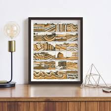 |
| Watercolor on paper 🎨🖌️❤️ | 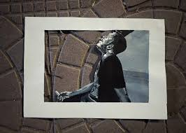 | |
| bby weaving from a couple months ago 🧡 small frame looms are my favorite for getting ideas flowing |